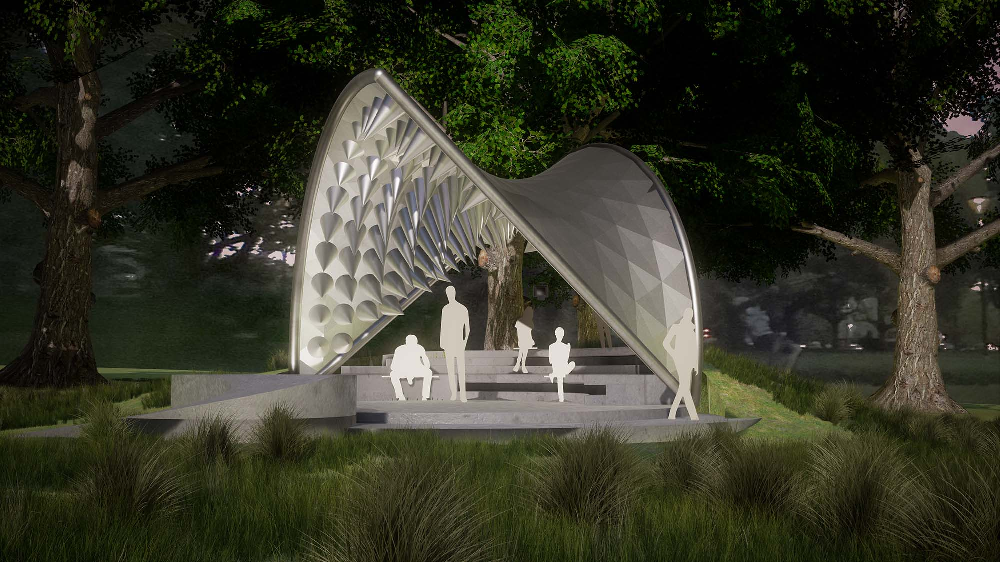

Punk Pavilion
Type: Public
Year: 2019
Site: Queen Victoria Gardens, Melbourne
Punk Pavilion is a proposal for the Queen Victoria Gardens (the M Pavilion site). Much like punk culture and fashion, the role of this pavilion is to create a space that challenges people’s emotions. The pavilion sits amongst the grassy field enticing the visitor in with its aluminium panelled exterior, revealing a dramatic and almost threatening spiky interior. The pointiness of the spikes responds parametrically to the curvature of the canopy surface, creating an undulating pattern of cones.
The pavilion becomes a strange creature within the landscape. The ground plane is manipulated to create an enclosed space with a tongue-like seating that extends
out into the wider gardens beckoning visitors to enter.